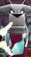

The General's Lair
At the start, it's pretty straight forward. You just have to go forward and watch the cutscene - then Viggo will start to shoot you. Now, run around collecting all the ammo you can when you need it. Just fire back at Viggo with strong guns like the Neutron or the Plasma Beamer - Heavy Machine guns and Auto Shotguns will also help you. Just be prepared - the models will blow up after you and Viggo shoot at it a lot of times, lowering your defense. After a fierce battle, Viggo will fall to the floor and "Fluff it". Then a new door will open.Run around and get to full health and full ammo. Then enter the new door. You will be shown a quick cutscene with General Bristol and 3 clones of Viggo. Now, as soon as the cutscene ends, run around and try to avoid being shot- there is no point in trying to attack him as he will just create another clone and that one will come after you instead.
Run around until you see a Tweek telepoint in mid-air. Jump into it, and quickly press jump to glide when you are Tweek, as the fall will probably fluff you if you don't. When you are down at the bottom, you will see a large red box. Attack it in any way, and it will break. Then turn around and jump into the lift and you will find yourself back at the top again (Along with any Viggo clones that didn't follow you down). If they get too hard to beat, attack them with any gun (They are like the bears- they won't take long to fluff). After that, look around until you find a door and a switch - Press the switch and the door will open.
Now jump into the door, turn around and there should be a ladder. Climb up it (Careful- sometimes the clones manage to follow you) and when you get to the top, you will see a Juliette telepoint. Glide onto the ledge where it is and change over. You will see some pawprints in front of you. Climb up them, and if you can't see more pawprints to climb, turn around until you do (Move around if you have to) . Then continue this until you reach the top. Break the red box and climb back down (Don't worry if you fluff it-All you have to do is re-enter the door from the beginning- the red boxes will still be destroyed and the first Viggo clone you fought won't be there). Now move around the room until you see some pawprints against the wall leading into a little compartment in the wall. Climb up them and you will see a Rico telepoint.
Jump into it (If you don't, then you might have to start all of this again as it's pretty hard to actually miss it, and the game then requires you to go underwater). Continue walking forward as Rico and then you will fall into some water. When you can swim properly again, rise to the surface. Turn around to where the waterfall is and jump to the side- there is a red box behind the waterfall. Destroy it and swim underwater into the tube. Swim through it and you will find yourself coming out of a thick tube. There should be a ladder which you can climb out of. Climb up it, and beware of the Viggo clones which might be underneath you. Now jump down and walk around until you see some rectangular tables with some big floor boards reaching up to the top. Jump inside the middle of them and turn around so that you are facing the wall. You will see a little entrance between the walls- jump inside and jump in the water. Careful you don't slide off when you gain control of your Fur Fighter.
A Roofus telepoint is amongst the water. Jump into it and look around until you face a wall with a ladder on it. Climb up, find the hole and burrow through it. You will be right next to a red box - Destroy it and look around until you find a Chang telepoint. Now go through the tiny hole there. You will be back in the room with the Viggo clones. You will see a tiny hole like the one you are in on the other side. Run into it, dodging the clones at the same time. Then, when you are in there, run around and make sure you don't come to a dead end or you don't come out of it. You will then come to a red box. Destroy it, and then find the way out. Find another tiny hole (You might find the other way into the same hole, so be careful) and enter it. You will notice this hole has an opening at the top. Run through and at the end is a Bungalow telepoint.
Switch to Bungalow, and jump up to the top and make your way out. Go back to the rectangular tables and start jumping from one to the other until you reach the top. (You will have to turn around each time). On the top floor is the final red box. Destroy it and there is a short cutscene and a final door opens. Destroy the Viggo clones, change to your favourite character (If you want to), get ammo, and restore energy.
Now make your way to the final door. A quick cutscene will appear with the evil cat, and then you do battle with the real General Viggo. Run around and attack him as many times as you can. He will flinch after a while. Run around to the back of him, and shoot the gel packs on his back. After it is destroyed, or Viggo is no longer flinching, he will turn around and carry on attacking you. You can still try and get the gel packs while he is moving, but that is very hard. Destroy all of the gel packs and Viggo will revert back to his usual self. Now get out the Neutron and Plasma Beamer, and attack. The chances are you will hear him roar, but he carries on attacking you. Continue attacking with everything you've got and eventually he will faint and fall on the floor. That is the end of the game, and the only thing left now is to go back after the tokens and babies if you haven't already done so, though that is not essential.
Total Fur Fighters is © 2001-2018 Fur Fighter Master aka RadSpyro. Website design © Kari of xemnas.net. Fur Fighters belongs to Muffin Games.